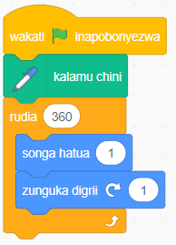
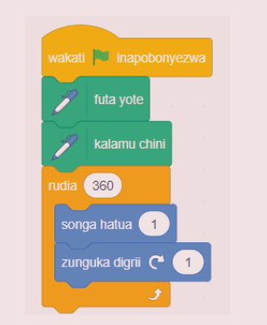
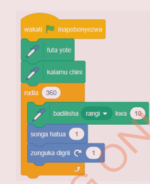

Kazi ya kufanya namba 10
Chora duara kwa kusogea hatua fupi fupi kisha kugeuka kidogo baada ya kila hatua. Kazi hii ya kufanya inaonesha jinsi ya kuchora duara kwa kusogea hatua 1 na kugeuka kwa nyuzi 1 baada ya kila hatua.
Hatua
Chagua kihusika, kwa mfano huu, chagua kalamu kutoka kwenye orodha ya vihusika.
Bofya bloku la Matukio kisha chagua bloku la wakati bendera ya kijani inapobonyezwa.
Bofya bloku la Kalamu kisha chagua bloku la kalamu chini.
Bofya bloku la Kidhibiti kisha chagua bloku la rudia ( ) na weka 360 kwenye sehemu ya sharti. Hii inaiambia programu irudie mara 360.
Ongeza msimbo wa kufanya kihusika kisonge hatua 1, na ageuke kwa digrii 1 baada ya kila hatua sehemu ya ndani ya bloku la rudia ( ). Angalia au sikiliza maelezo ya Kielelezo namba 14.
Bofya bendera ya kijani kuanzisha programu. Utaona kuwa kihusika kitachukua hatua ndogo na kugeuka kwa nyuzi 1 hadi duara kamili litakapochorwa.
Bloku za msimbo

Kielelezo namba 14: Kuchora duara
Kumbuka:
Ni muhimu kufuta michoro ya zamani kutoka kwenye jukwaa kabla ya kuchora umbo jipya. Angalia au sikiliza maelezo ya Kielelezo namba 15 (a).
Duara lina jumla ya nyuzi 360.
Ukigeuka kwa nyuzi 1 kila wakati, unahitaji kurudia mara 360 ili kukamilisha duara.
Ukigeuka kwa nyuzi 2 kila wakati, rudia mara 180.
Ukigeuka kwa nyuzi 3, rudia mara 120, na kadhalika.
Hatua fupi huchora duara dogo, na hatua ndefu huchora duara kubwa.
Kuchora duara lenye rangi mbalimbali, unaweza kuongeza bloku la weka rangi ya kalamu kuwa namba uipendayo. Angalia au sikiliza maelezo ya Kielelezo namba 15 (b).


Kielelezo namba 15: Kuchora duara lenye rangi